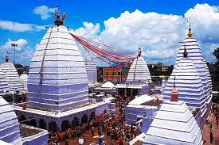
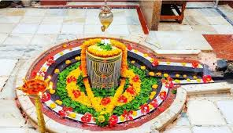
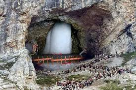
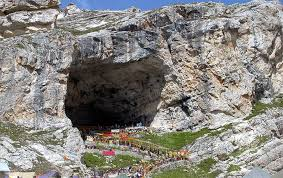

Baidyanath Temple


Location: Deoghar, Jharkhand
Deity: Lord Shiva (as Baidyanath – the “Healer”)
Significance: One of the 12 Jyotirlingas and 51 Shakti Peethas
Mythology: Ravana offered his ten heads to Shiva here, seeking his blessings.
Architecture: Simple stone temple with a tall shikhara (tower).
Festival: Shravani Mela (July–August) – attracts millions of Kanwariyas.
Pilgrimage: Devotees carry holy Ganga water and offer it to Shiva here.
Jagannath Temple, Ranchi


Location: 10 km from Ranchi city center, atop a small hillock
Deity: Lord Jagannath with Balabhadra and Subhadra
Architecture: Kalinga style, similar to Puri’s Jagannath Temple
Historical Significance: Built in 1691 by Thakur Ani Nath Shahdeo of Barkagarh estate.
Festivals: Hosts an annual Rath Yatra (chariot festival) attracting thousands.
Accessibility: Reachable by climbing ~100 steps.
Cultural Importance: Major pilgrimage and tourist site in Ranchi.